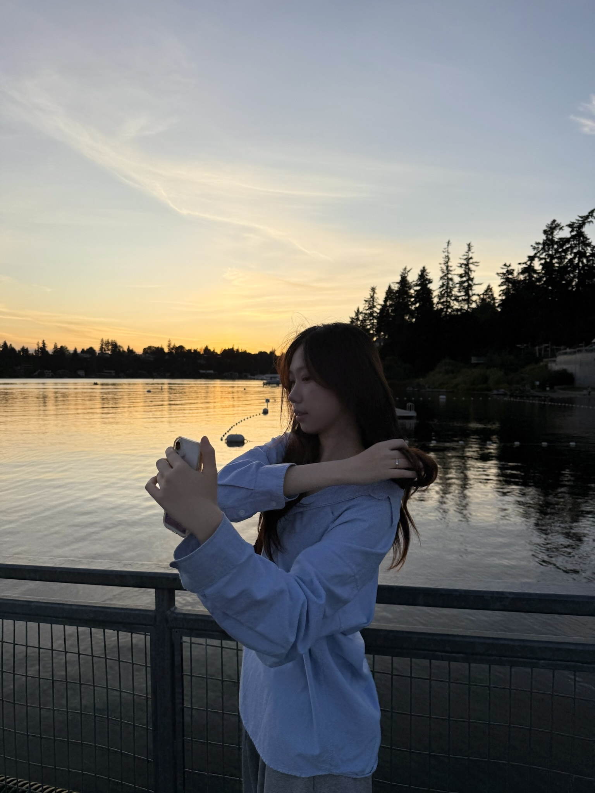

thanks for coming :D
My work sits at the intersection of curiosity, strategy, and empathy — I'm drawn to understanding how products create real value for the people who use them and the businesses that build them. I believe good design starts in the questions you ask and the context you seek out. Whether shaping product strategy from the ground up or refining an existing experience, I aim to create solutions that are both intentional and built to last.
Growing up spending hours and hours tinkering around in Photoshop, I fell in love with the process of creation: experimenting both inside and outside the box, iterating and iterating, and discovering how small details could completely change how something feels. Over time, that early obsession with craft grew into a genuine curiosity about why people respond to design the way they do, and how thoughtful design can shape experiences that stay with people long after the interaction ends.
Now, as I finish my master’s degree in Information Experience Design, I’m continuing to deepen my technical and creative practice. As I get started in my career, I excited to keep designing for products that help people navigate complexity with clarity. Outside of design, you can find me catching Pokemon, designing posters on Photoshop, spending time with my family, and going to happy hour with friends :)
experimenting with spectulative design in my classes and free-time / clearing out my beli saved restaurants before i leave nyc 🥹 / coding and designing this portfolio... / collecting molly tea magnets / watching latest season of invincible / & many more!
2026
M.S. in Information Experience Design
2025
Product Design Intern
Graduate Assistant
2024
UX/UI Design Fellow
Product Design Intern
2023
B.S. in Human Computer Interaction & Business Adminstration
Product Design Intern